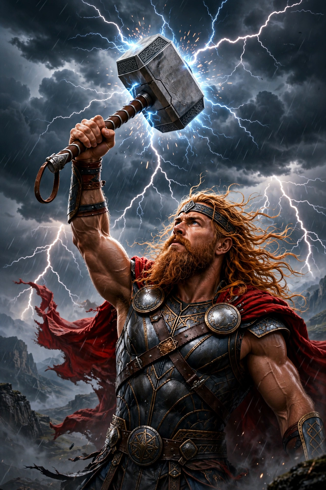

Thor (Old Norse: Þórr) is a hammer-wielding god in Norse mythology, associated with lightning, thunder, storms, sacred groves and trees, strength, and the protection of humankind. He is the son of Odin and the earth goddess Jörð, husband of the golden-haired Sif, and the strongest of the Æsir. The most popular of the Norse gods in the surviving sources, Thor appears throughout the Poetic Edda and Prose Edda, compiled in Iceland in the 13th century from older oral tradition.

| Thor | |
|---|---|
| Old Norse | Þórr |
| Abode | Bilskírnir, in Þrúðheimr |
| Weapon | Mjölnir (hammer); Megingjörð (belt); Járngreipr (iron gloves) |
| Parents | Odin and Jörð |
| Consort | Sif |
| Children | Þrúðr, Móði, Magni |
Thor's origins lie in the common Germanic god Donar (Old High German) or Thunor (Old English), discussed by Tacitus under the interpretatio romana as Hercules. In the Eddas, Thor defends the gods and the human world against the jötnar (giants). His adventures include fishing for the world-serpent Jörmungandr, the ill-fated journey to Útgarða-Loki, the theft and recovery of Mjölnir in Þrymskviða — in which he disguises himself as the goddess Freyja to reclaim his hammer — and contests retold by Snorri Sturluson in the Skáldskaparmál.
Thor travels in a chariot drawn by two goats, Tanngrisnir and Tanngnjóstr, whom he can eat and resurrect with his hammer. His hall Bilskírnir is said to be the largest building ever raised. Mjölnir, forged by the dwarfs Sindri and Brokkr, has a shortened handle — the result of Loki's interference — and returns to Thor's hand when thrown. Thor's name survives in the English weekday Thursday ("Thor's day") and in numerous place names across Scandinavia and England.
At Ragnarök, Thor is fated to fight Jörmungandr, the great serpent that encircles the world. He will kill the serpent but be able to walk only nine steps afterwards before falling dead from the venom it has blown over him.
Thor amulets — small Mjölnir pendants — are among the commonest finds from the Viking Age, and the god remained a rallying figure of the old religion against Christianization. In modern popular culture he is best known as a superhero in Marvel Comics and films, a reinvention dating from 1962.
Odin · Loki · Ragnarök · Norse mythology · Mjölnir
From Wikipedia, the free encyclopedia.